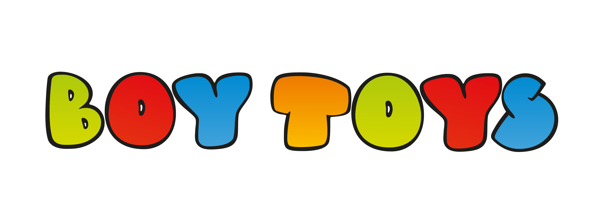

Conozca más sobre nuestro software innovador que está revolucionando el mercado de juguetes en la empresa BOY TOYS Factory.
Información del Software
Nombre del Software: Boytoys Manager Empaquetado
Versión: 1.0.0
Descripción: Boytoys Manager es una solución integral diseñada para optimizar la gestión de despacho de productos en inventarios y en tiendas de juguetes. Nuestro software ofrece funcionalidades avanzadas para la administración eficiente de productos y generación de informes detallados.
Características Principales:
- Gestión de Empaquetado en tiempo real
- Control de cantidad
- Informes personalizados y análisis de datos
- Interfaz amigable y fácil de usar
- Soporte multilingüe
- Lectura de código de barras para obtener información del producto como Ref y Descripción del ítem
- Campos de ingreso de datos como Cantidad y Número de caja, los cuales no permiten registros en cero
- Funcionalidad de exportar datos en archivo Excel para realizar filtros y más lógica requerida
- Visualización de datos registrados con paginación y funcionalidad de edición para corregir errores
- Tres filtros de búsqueda por: código de barras, número de caja y Ref